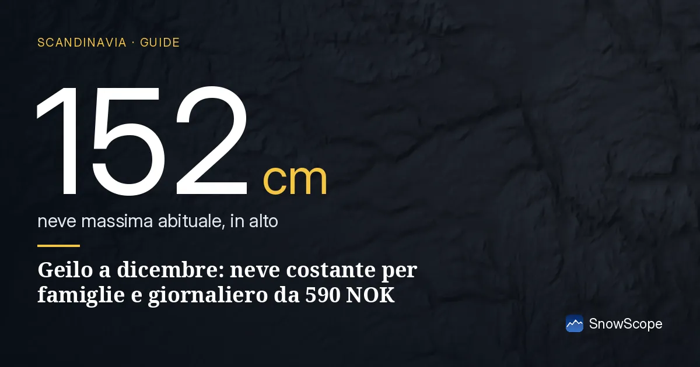

Geilo a dicembre: neve costante per famiglie e giornaliero da 590 NOK
Sulla pagina ufficiale di Geilo il giornaliero parte da 590 NOK, circa 56 EUR, e nei nostri 46 inverni di storico i suoi pendii dolci sono tra i più costanti della Norvegia a dicembre: il 96 % degli inverni aveva almeno 30 cm a metà montagna (971 m) nella settimana dal 15 al 21 dicembre.
Le previsioni neve in tempo reale per Geilo nell'app SnowScopeAltezza neve, allerte powder e mappa 3D, gratis.
Principianti e famiglie
È la classica località norvegese per famiglie: 35 km di piste mappate e 20 impianti su un altopiano, con un modesto dislivello di 384 m tra 779 m e 1163 m. La parola chiave è 'dolce'. Per una prima settimana bianca conta più la neve del dislivello, e a Geilo la neve parte in basso: la base aveva 30 cm nella settimana dal 15 al 21 dicembre nell'80 % dei nostri inverni e in 46 inverni non è mai stata scoperta il 15 dicembre.


Sciatori intermedi
Non troverete lunghe piste ripide, ma troverete neve. In vetta il 98 % degli inverni aveva almeno 30 cm in ogni settimana di dicembre dall'8 in poi, e l'83 % aveva lì 60 cm o più a Natale. Un tipico 15 dicembre dà 42 cm alla base, 57 cm a metà montagna e 68 cm in vetta.
La neve dietro i consigli
Qui la neve è acqua immagazzinata in un paesaggio freddo e alto, e la scorta si forma presto: il primo giorno abituale con 30 cm a metà montagna è il 14 novembre. Anche un anno magro (1 inverno su 10) conserva 35 cm a metà montagna il 15 dicembre.
La tendenza è in calo, ma senza drammi. La media di dicembre alla base è scesa da 51 cm nei primi 15 inverni a 32 cm negli ultimi 15; a metà montagna da 64 a 52 cm. Ogni settimana di Natale degli ultimi 15 inverni aveva ancora 30 cm a metà montagna.
Costi
La pagina ufficiale degli skipass di Geilo mostra il giornaliero adulti da 590 NOK e i plurigiornalieri da 1.138 NOK; i prezzi dipendono dalla data e dal numero di giorni. Al cambio di riferimento dell'euro del 12 novembre, 590 NOK sono circa 56 EUR. È un prezzo 'a partire da': controllate le vostre date nello shop prima di contarci.
Oppure Hafjell?
Hafjell, l'ex area olimpica vicino a Lillehammer, ha molto più dislivello (866 m) ma parte molto in basso, a 192 m. La sua neve di dicembre è un po' più sottile a metà montagna: 52 cm in un tipico 15 dicembre e 85 % degli inverni con 30 cm nella settimana dal 15 al 21 dicembre. Anche lì i prezzi sono dinamici e sulla pagina ufficiale non siamo riusciti a leggere un importo fisso.
Per le famiglie che vogliono neve affidabile a dicembre su piste facili, Geilo è la scelta più sicura.
Consigli per sciatori
- Prenotate qualsiasi settimana dall'8 dicembre: da lì la vetta aveva 30 cm nel 98 % dei nostri inverni.
- Controllate online il prezzo per le vostre date esatte: 590 NOK è il prezzo 'da'.
- Geilo è sulla ferrovia Oslo-Bergen: il treno evita l'auto sulle strade invernali.
- Vestitevi per il gran freddo; l'altopiano è esposto e le giornate di dicembre sono brevi.
Altre mappe (siti esterni)
Riferimenti e crediti
- Geilo: official lift-pass prices (2026-27), checked 13 November 2026 www.skigeilo.no/en/ski-pass
- Hafjell: official lift-pass page of the operator (prices by date; no fixed price quoted), checked 13 November 2026 www.alpinco.com/en/hafjell/buy-day-pass-1-8-days
- European Central Bank euro reference rates (2026-11-12) www.ecb.europa.eu/stats/policy_and_exchange_rates/euro_reference_exchange_rates/html/index.en.html
Su questi numeri
Numeri della neve: storico neve SnowScope, 46 inverni passati (1980-81 - 2025-26) alle quote della località, corretto per la quota (una stima per un'area, non i bollettini della località); "buona neve" = 30 cm o più al suolo in media nella settimana. Mappa: la nostra altezza abituale al 15 dicembre distribuita sul terreno secondo la quota. Piste e impianti: mappatura OpenSkiMap. Skipass: listini ufficiali delle località, verificati il 13 novembre 2026; i prezzi possono cambiare.
Bollettini valanghe ufficiali: Varsom (NVE)
Cita questo articolo
Per ricerca, didattica o stampa: numeri e grafici sono liberamente riutilizzabili con licenza CC BY 4.0 citando così.
SnowScope (2026), Geilo a dicembre: neve costante per famiglie e giornaliero da 590 NOK, https://snowscope.app/blog/it/2026/11/geilo-december-ski-trip-family-cheap-snow.html, consultato il 2026-11-14
SnowScope (Atlas Labs). (2026, November 14). Geilo a dicembre: neve costante per famiglie e giornaliero da 590 NOK. SnowScope snow reports. https://snowscope.app/blog/it/2026/11/geilo-december-ski-trip-family-cheap-snow.html
BibTeX
@misc{snowscope2026geilodecemberskitripfami,
author = {{SnowScope (Atlas Labs)}},
title = {Geilo a dicembre: neve costante per famiglie e giornaliero da 590 NOK},
year = {2026},
month = nov,
howpublished = {\url{https://snowscope.app/blog/it/2026/11/geilo-december-ski-trip-family-cheap-snow.html}},
note = {Published 2026-11-14 13:29 UTC; accessed 2026-11-14}
}· CC BY 4.0 · Metodi, dati e strumenti →
Geilo: neve e temperatura per quota, quest'inverno vs lo scorso (strumenti) →
Segui Geilo
Gratis: un messaggio quando arriva la neve e il meteo ogni mattina.